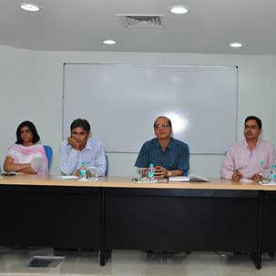

ELECTIONS In USS

Surbhi Jain (USMC)
University elections were held in GGSIPU on 27th September, 2014. In this process first of all CRs (Class Representatives) are elected for which only the class members vote. They act like the monitors and take the students’ word to faculty members. Only those students are eligible for contesting/proposing for the post of CR who:
- Do not have any supplementary/back in any of the subjects of any semester/year.
- Have no disciplinary enquiry or action taken or pending against them.
- Have the potential to actively work for the overall development of the University.
- Have not been detained from the examination for shortage of attendance.
School Representative represents the whole school. Let’s say USMC’s SR, now s/he will take the word of the whole school to the higher authorities. Students from pre-final or final year contest for this. Every school has 2 SRs.
1. General SR
Every CR of that school participates and votes. Only pre-final and final year are eligible for this post.
2. Academic SR
Only final year students are eligible to contest and overall topper of all the previous years of each are eligible to vote and can contest for this.
USS (University School of Studies) have 11 schools in all so, we have 11 General SRs and 11 Academic SRs summing up to a total of 22 SRs. The DSW (Directorate of Students’ Welfare) consists of 30 members, 22 SRs and eight other members who are nominated by the panel of teachers of DSW on the basis of the achievements and interviews.
Elections are held for the posts of President, Vice President, General Secretary and eight executive members in which all the 30 members of DSW vote. Every school has one executive member. Generally each school sends one form for this post and executives are elected unopposed. Official notice for the elections and list of the elected members are displayed on the site : www.ipu.ac.in
In the recently held elections the elected office bearers are as under:
- President : Sohan Kumar Vats from USLLS fifth year.
- Vice President : Parth Sarthy from USICT fourth year.
- General Secretary : Prachi Dhiman from USMC second year.
Track the activities of USS on www.facebook.com/ggsipuniversity which is being operated by the Student Council of USS.